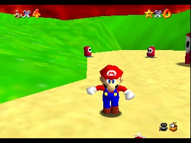
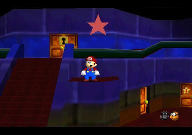
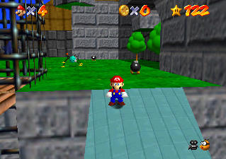

Miscellaneous
Old Junk
This old junk is the bane of my existence...
But since you all so lustily crave such material, I couldn't let you down.

Super Mario 64: Shy Guy Invasion
Download
File Size: 25.8 KB
Description: A mini hack I did in 2008. Contains 1 star and 1 level. Yes, that's it. The only one on this page that's kind of worth playing, actually.

Super Mario 64 2/Luigi Edition/Ultra Challenge
Download Luigi version
File Size: 54.6 KB
Download v1.1
File Size: 481.8 KB
Download v1.8
File Size: 407.1 KB
Description: An old Super Mario 64 "texture hack" I did from 2007-2008. It was originally meant to be a "play as Luigi" version of SM64 but turned out to be a disaster. :P

Super Mario 64 Beta Replica
Download
File Size: 554.9 KB
WARNING: This mod was made a long time ago before any relevant information about SM64 beta was collected. Be warned that what you play does not logically represent the beta at all (aside from some texture differences).

Super Mario 64 Wacky Worlds (OBSOLETED PROTOTYPES)
Download
File Size: 1.1 MB
WARNING: Texture hack versions only. See the current (full) version on the Wacky Worlds Official Page.